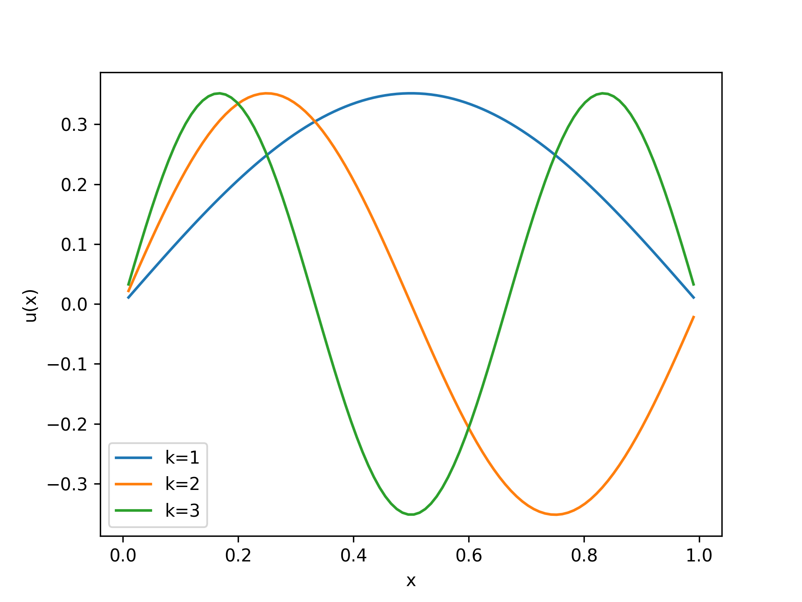
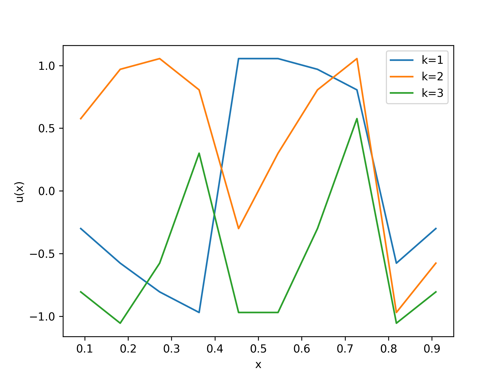
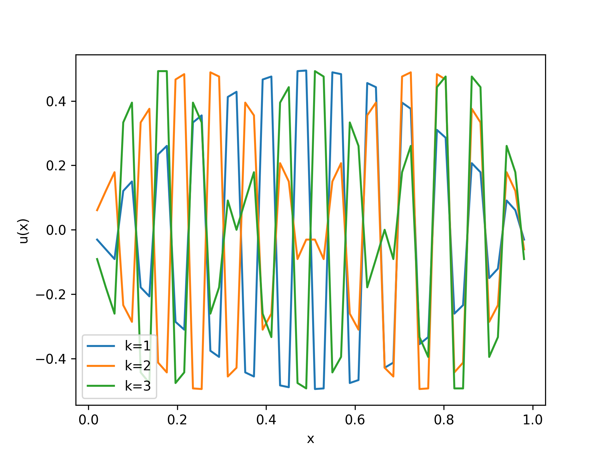
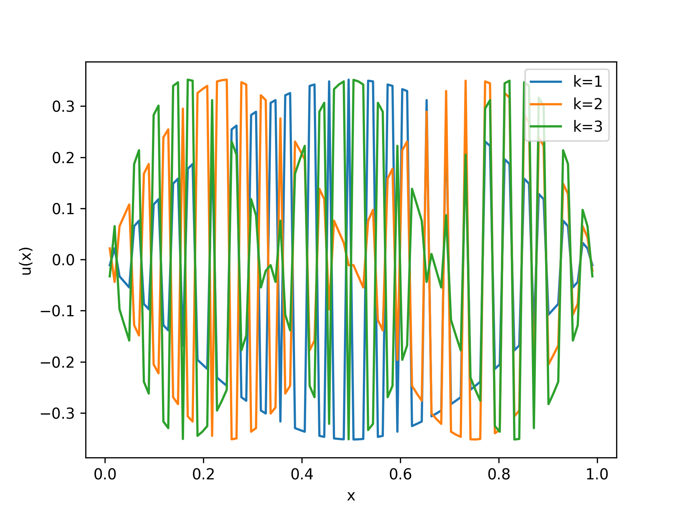
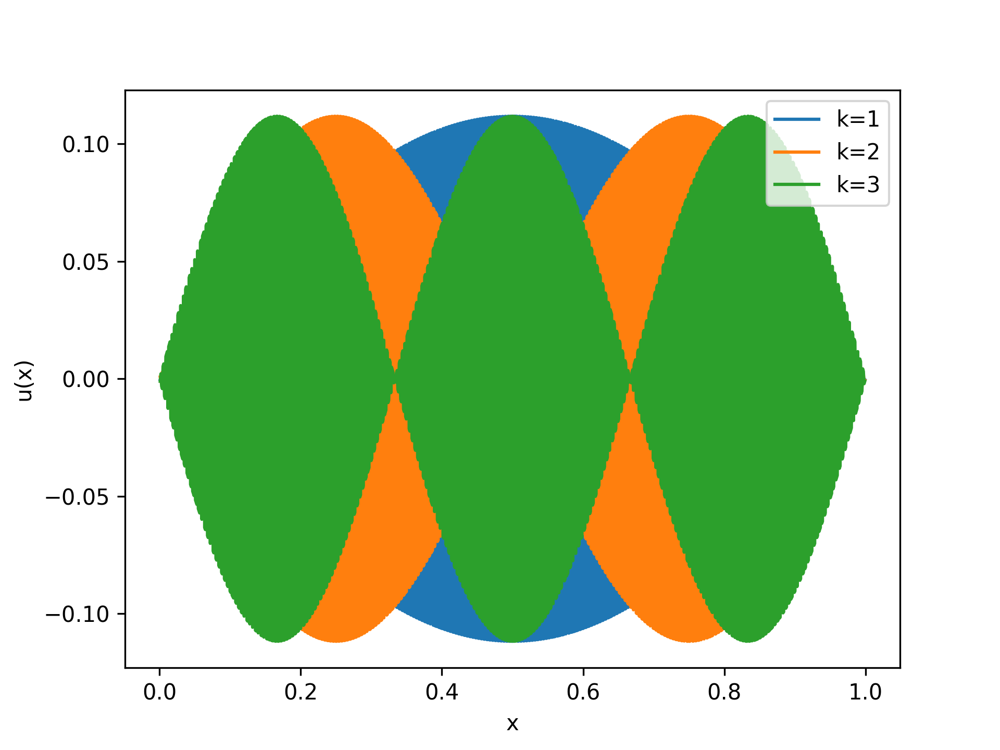
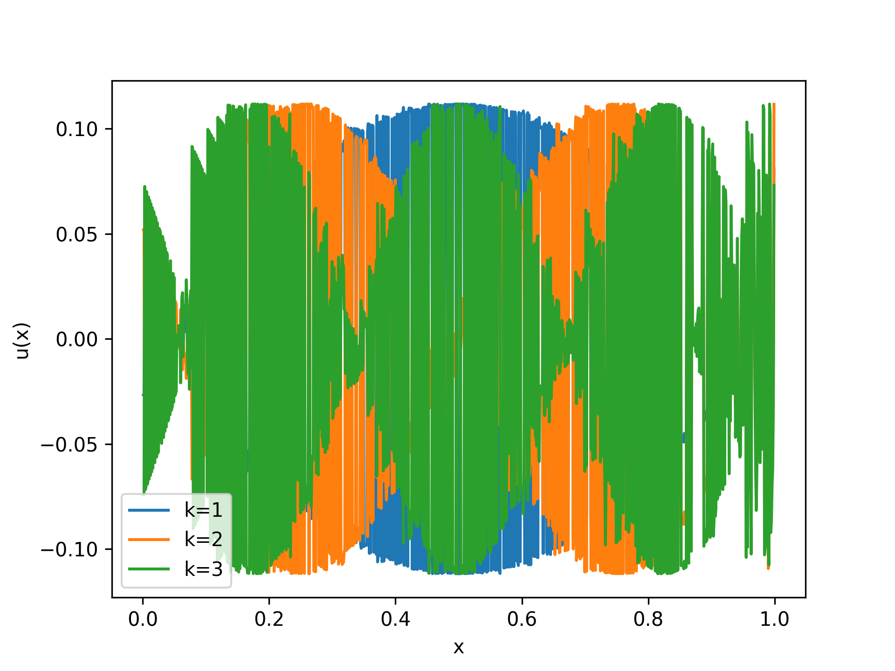

I was recently working on a homework assignment for a numerical linear algebra class and
ran into some interesting problems. The goal was to numerically compute the
eigenvectors of the discrete Laplacian, but with (what was hoped to be) better precision,
torch.eig() gives almost correct solutions that oscillate wildly.
Consider the continuous eigenvalue problem with boundary values
$$
\begin{cases}
\phi_{xx} &= \lambda \phi \\
\phi(0) &= 0 \\
\phi(1) &= 0
\end{cases}
$$
This is frequently used in PDEs to decompose solutions of a BVP
in terms of eigenfunctions \(\phi^{(k)}\) (which we derive at the end of this post). In simple words,
if applying the second derivative just rescales a function, you might hope to decompose your intial conditions,
and be able to evolve them by scaling.
To solve this numerically, things need to be discretized. We represent the domain \([0,1]\)
with \(x \in \mathbb{R}^{n+2}\) by
$$
h = \frac1{n+1} \text{ and } x_i = ih
$$
\(x\) is a vector representing the endpoints of a partition. To approximate \(u(x)\) we use the
vector \(u_i = u(x_i)\) evaluated on the partition.
From MAT157, we can approximate the second derivative of $u(x_i)$ by
$$
(u_{xx})_i \approx \frac{u_{i+1} - 2u_i + u_{i-1}}{h^2}
$$
which is a linear combination of the elements of \(u_i\). Written as a matrix,
$$
\begin{pmatrix}
(u_{xx})_1 \\
(u_{xx})_2 \\
(u_{xx})_3 \\
(u_{xx})_4 \\
\vdots \\
(u_{xx})_{n-1} \\
(u_{xx})_n \\
\end{pmatrix}
\approx
\frac{1}{h^2}
\begin{pmatrix}
1 & -2 & 1 & 0 & 0 & 0 & \cdots & 0 \\
0 & 1 & -2 & 1 & 0 & 0 & \cdots & 0 \\
0 & 0 & 1 & -2 & 1 & 0 & \cdots & 0 \\
0 & 0 & 0 & 1 & -2 & 1 & \cdots & 0 \\
\vdots & \vdots & \vdots & \ddots & \ddots & \ddots & \ddots & \vdots \\
0 & \cdots & 0 & 0 & 1 & -2 & 1 & 0 \\
0 & \cdots & 0 & 0 & 0 & 1 & -2 & 1
\end{pmatrix}
\begin{pmatrix}
u_{0} \\
u_{1} \\
u_{2} \\
u_{3} \\
u_{4} \\
\vdots \\
u_{n} \\
u_{n+1} \\
\end{pmatrix}
$$
By the boundary value problem, \(u_0 = 0\) and \(u_{n+1} = 0\). This zeroes out the first and last column to give the \(n \times n\) system $$ \begin{pmatrix} (u_{xx})_1 \\ (u_{xx})_2 \\ (u_{xx})_3 \\ (u_{xx})_4 \\ \vdots \\ (u_{xx})_{n-1} \\ (u_{xx})_n \\ \end{pmatrix} \approx \frac{1}{h^2} \begin{pmatrix} -2 & 1 & 0 & 0 & \cdots & 0 \\ 1 & -2 & 1 & 0 & \cdots & 0 \\ 0 & 1 & -2 & 1 & \cdots & 0 \\ 0 & 0 & 1 & -2 & \cdots & 0 \\ \vdots & \vdots & \ddots & \ddots & \ddots & \ddots \\ 0 & \cdots & 0 & 1 & -2 & 1 \\ 0 & \cdots & 0 & 0 & 1 & -2 \end{pmatrix} \begin{pmatrix} u_{1} \\ u_{2} \\ u_{3} \\ u_{4} \\ \vdots \\ u_{n} \\ \end{pmatrix} $$
For \(f(x)\) defined on \([0,1]\) and discretized in the same way, the general BVP \(f = u_{xx}\) can be approximated by $$f = \frac1{h^2}L u$$ Where \(L\) is from the above linear system.
Now consider the eigenvalue problem \(\lambda u = \frac1{h^2}L u\). As a pytorch expert, this
should be easily doable with a simple call of torch.linalg.eigh(), surely, right?
To test, below are a few different methods of computing the first 3 eigenvectors of \(L\).
 The eigenvectors are sinusoidal with increasing modes and approximate to the true values well (see at the very end)
 These look quite messy so we increase \(n\) to make things more precise
 The different modes are clear in these solutions, but the entries of the vector seem to oscillate in sign! The solution would essentially be correct if not for this
 Even more pronounced. The modes are correct but the entries oscillate
 At \(n=1000\)!
 Things look a little worse without using the command for symmetric matrices
This seems like a really interesting phenomenon, although I'm not sure what it's called, and haven't been able to find much online. Interesting if certain solutions using the power method have oscillating entries.
We show that the eigenfunctions are \( \phi^{(k)} = \sin \left(\pi k x\right) \). Consider the eigenvalue problem $$ \begin{cases} \phi_{xx} = \lambda \phi \\ \phi(0) = 0 \\ \phi(1) = 0 \end{cases} $$ If \(\lambda > 0\), we see the general solution is given by \(\phi(x) = a \sinh(x) + b \cosh(x)\). However, the solution is trivial (\(a,b\)) in this case, since \(\phi(1) \neq 0\) for either of these. When \(\lambda \leq 0\), we relabel \(\phi_{xx} = -\lambda \phi\) for \(\lambda > 0\), and the general solution is given by $$ \phi(x) = a \sin(\sqrt{\lambda} x) + b \cos(\sqrt{\lambda} x) $$ The condition \(\phi(0) = b = 0\) implies \(\phi(x) = a \sin(\sqrt{\lambda} x)\). The other boundary condition gives \(\sin(\sqrt{\lambda}) = 0 \implies \sqrt{\lambda_k} = \pi k\). Choosing \(a=1\), the eigenfunctions of the above are given by $$ \phi^{(k)} = \sin(\pi k x) \text{ and } \lambda_k = \pi^2 k^2 $$
We first consider the ordinary \(L\) and rescale the eigenvalues respectively. $$ \lambda u = L u $$ The above equation with the boundary conditions defines the recurrence $$ \begin{cases} u_0 &= 0 \\ (\lambda - 2) u_k &= u_{k+1} + u_{k-1} \\ u_{n+1} &= 0 \end{cases} $$ From MAT344, the solution to \(0 = u_{k+1} - (\lambda - 2) u_k + u_{k-1}\) is given by \(u_k = a z_1^k + a z_2^k\) where \(z_1, z_2\) are the principal roots of $$ p(z) = z^2 - (\lambda - 2) z + 1 $$ By comparing coefficients of \(p(z) = (z - z_1)(z - z_2)\), \(z_1 = z_2^{-1}\) and \(z_1 + z_2 = \lambda - 2\). We may write $$ u_k = a(z_1^k - z_1^{-k}) $$ The boundary condition yields \(0 = u_{n+1} = a(z_1^{n+1} - z_1^{-(n+1)}) \implies z_1^{2(n+1)} = 1\). Therefore \(z_1\) is a root of unity of degree \(2(n+1)\). Since we restrict to \(n\) entries of our solution \(u\), we consider the first \(1 \leq k \leq n\) possible values of \(z_1\) given by \((z_1)_k = \exp\left( \frac{k}{n+1} \pi i\right)\). By the other condition on the coefficients, \begin{align} 2 - \lambda_k &= (z_1)_k + (z_1)_k^{-1} = \exp\left( \frac{k}{n+1} \pi i\right) + \exp\left( -\frac{k}{n+1} \pi i\right) \\ \lambda_k &= 2 - 2\cos \left(\frac{k\pi}{n+1}\right) = 4 \sin^2 \left(\frac{k\pi}{2(n+1)}\right) \end{align} by our choice of scaling \(A = \frac{1}{h^2}L\), we have for the matrix \(A\) that $$ \lambda_k^{(A)} = \frac{4}{h^2}\sin^2 \left(\frac{k\pi}{2(n+1)}\right) $$ Choosing \(a=\frac{1}{2}\) the representation of the entries of the eigenvectors gives $$ u_j^{(k)} = \frac{1}{2}((z_1)_k^j - (z_1)_k^{-j}) \implies u_j^{(k)} = \sin\left(\frac{kj\pi}{n+1}\right) $$ Therefore $$ u^{(k)} = \left(\sin\left(\frac{k\pi}{n+1}\right), \sin\left(\frac{2k\pi}{n+1}\right),\ldots, \sin\left(\frac{kn\pi}{n+1}\right)\right) $$ form the \(1 \leq k \leq n\) eigenvectors of the simplified \(L\), as desired. As \(n \to \infty\), we see that the vectors closely represent indicator functions on \(\frac{1}{n+1}\) intervals which discretize the solutions \(\phi^{(k)}\) from the previous part.